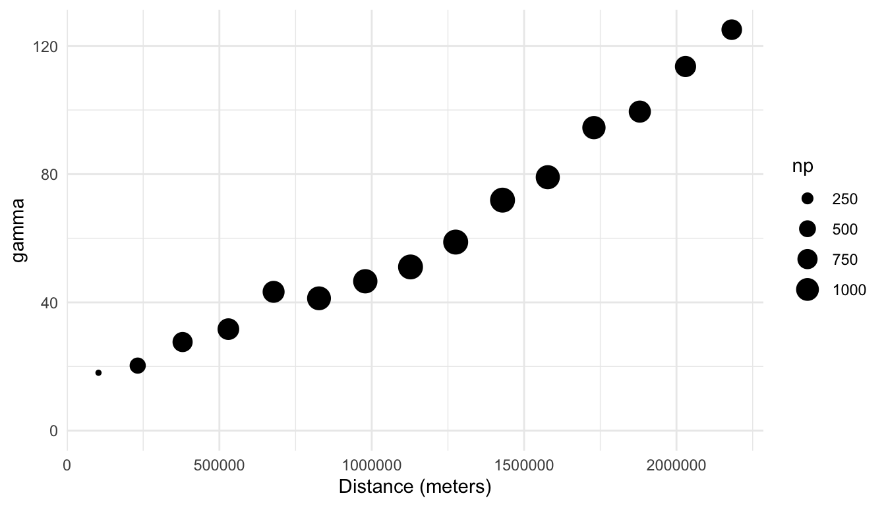
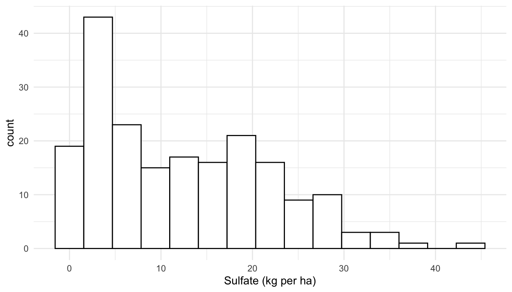

library(spmodel)
library(sf)
library(tidyverse)1 Spatial Data Exploration
Goals
- Assess when the use of a spatial model is appropriate.
- Construct a plot of spatial data.
- Construct and interpret an empirical semivariogram.
Throughout this section, we will use the spmodel, sf, and tidyverse packages:
1.1 Introduction to Spatial Data
What exactly makes a spatial analysis an appropriate choice? All data is collected at some location in space, but spatial analysis is useful if we expect that observations that are collected closer together in space are going to be more similar than observations that are collected further apart in space.
For example, suppose that we have data on sulfate atmospheric deposition (in kg per hectare) in the United States at 197 unique locations in Alaska. In this example, we expect there to be some spatial correlation: sulfate depositions should be more similar if they are collected at locations that are near one another. In this example, a spatial analysis of the sulfate data is appropriate.
In contrast, suppose that we have data on whether or not a professional tennis player wins tournaments that they play throughout the world in a calendar year. While this data is also collected in space (at the courts where the player plays their tournaments), a spatial analysis is less appropriate here. We would expect whether or not the player wins the tournament to be strongly driven by factors like the court surface and the level of the tournament, but we would expect little spatial correlation.
Whether or not spatial analysis is appropriate is not always an easy question. Throughout these course materials, we use examples from fields where spatial analysis is more common, including examples using ecological data, environmental science data, and housing data.
For our first example, consider again the sulfate data described above. The data, called sulfate and stored as a “simple features” sf object, can be loaded with
sulfate
## Simple feature collection with 197 features and 1 field
## Geometry type: POINT
## Dimension: XY
## Bounding box: xmin: -2292550 ymin: 386181.1 xmax: 2173345 ymax: 3090370
## Projected CRS: NAD83 / Conus Albers
## First 10 features:
## sulfate geometry
## 1 12.925 POINT (817738.8 1080571)
## 2 20.170 POINT (914593.6 1295545)
## 3 16.822 POINT (359574.1 1178228)
## 4 16.227 POINT (265331.9 1239089)
## 5 7.858 POINT (304528.8 1453636)
## 6 15.358 POINT (162932.8 1451625)
## 7 0.986 POINT (-1437776 1568022)
## 8 0.425 POINT (-1572878 1125529)
## 9 3.585 POINT (-1282009 1204889)
## 10 2.383 POINT (-1972775 1464991)An sf object is a convenient way to store spatially indexed data in R. Examining our sf object, we can break down the output line-by-line:
- the first line tells us that there are 197 “features” and 1 “field”: this means that there are 197 spatial locations and 1 variable that has been collected at those spatial locations.
- the
POINTGeometry type means that the field is recorded at specific points. Another Geometry type isPOLYGON, which means that each feature is collected at a polygonal area. - the Dimension, Bounding box, and Projected CRS (Coordinate Reference System) give some additional spatial information. We will discuss the CRS further in Section 1.3.3.
- Finally, the “First 10 features” show the first 10 spatial locations. This part of the output should look familiar to anyone who uses
tibbles. The primary difference is that there is a column specifically namedgeometrythat gives the spatial location of each feature. In this case, since the Geometry type isPOINTand the Dimension isXY,geometrygives theXandYpoint coordinates of each feature.
In spatial statistics, we should construct a plot of the response variable at the measured spatial locations. Much like other subfields of statistics, plotting our data is an important first step toward a more formal analysis! We can make a plot of the sulfate variable with
ggplot(data = sulfate, aes(colour = sulfate)) +
geom_sf() +
scale_colour_viridis_c() +
theme_void() +
labs(colour = "Sulfate (kg per ha)")Note that, because sulfate is an sf object, we do not need to specify x and y coordinates for our plot: these are pulled automatically from the geometry of sulfate when we use the geom_sf() function designed specifically for sf data objects.
Based on the plot, is the sulfate variable spatially correlated? To make an informal assessment, the question we ask ourselves is generally “Are sulfate values more similar for locations closer together than they are for locations further apart?” For this example, we do see that, in general, locations closer together have more similar sulfate values. The northeast region of the United States has locations that tend to have high sulfate while the western region United States has locations that tend to have lower sulfate.
Based on the map, we might say that sulfate is “very” spatially correlated. But, “very” is a vague adjective based only on our own subjective assessment. How might we explore the nature of the spatial correlation with a different plot?
1.2 The Empirical Semivariogram
While the plot of the response variable with x and y-coordinates is a useful initial plot for examining spatial data, we might want to contruct a plot to more clearly assess the degree of spatial correlation for a response variable. One common plot made to explore the degree of spatial correlation is the empirical semivariogram. Before building the empirical variogram for the sulfate variable, we will first build an empirical variogram “from scratch” using a small toy data set consisting of just 4 observations:
toy_df <- tibble(obs_id = c("A", "B", "C", "D"),
xcoord = c(1, 1, 2, 2), ycoord = c(1, 2, 1, 2),
z = c(9, 7, 6, 1))
toy_df
## # A tibble: 4 × 4
## obs_id xcoord ycoord z
## <chr> <dbl> <dbl> <dbl>
## 1 A 1 1 9
## 2 B 1 2 7
## 3 C 2 1 6
## 4 D 2 2 1There are four variables in toy_df:
obs_id, an observation identification letter.xcoordandycoord, which give the spatial coordinates of each observation.z, a generic response variable collected at each of the four spatial locations.
The x-axis of an empirical semivariogram is the distance, denoted \(h\), between data points. The y-axis of an empirical semivariogram is the semivariance, defined as the average squared difference between values of z for all pairs of locations with the distance \(h\), divided by 2. The semivariance, denoted \(\gamma\), is a function of the distance, \(h\), so it is often written as \(\gamma(h)\). For example, the following pairs of observations are a distance of \(1\) unit apart:
A&B.A&C.B&D.C&D.
We take the average squared difference in z for each of these pairs and divide the result by 2 to obtain the semivariance value for the semivariogram at the distance \(h = 1\):
\[ \gamma(1) = \frac{1}{2} \cdot \frac{(9 - 7)^2 + (9 - 6)^2 +(7 - 1)^2 + (6 - 1)^2}{4} = 9.25. \]
We then repeat this calculation for all unique distances. The only other unique distance left in this small data set is the distance between A & D and B & C, both of which are 1.414 units apart. So, the semivariance at distance \(h = 1.414\) is
\[ \gamma(1.414) = \frac{1}{2} \cdot \frac{(9 - 1)^2 + (7 - 6)^2}{2} = 16.25. \]
Our toy empirical semivariogram for this very small example looks like:
For almost any practical example, there are far more pairs of data points than the 6 pairs we used for the toy empirical semivariogram. And, if the points are not in a grid, there are many distances that only have one unique pair. For example, in the sulfate data with just 197 spatial locations, there are 19307 unique distance values between points. Therefore, semivariograms are rarely constucted using all unique distances, as was done with the toy example. Instead, empirical semivariograms are almost always constructed by binning distances and calculating the semivariance for all pairs of observations that have a distance that falls into the bin.
Note
The binning of distances to create the empirical semivariogram is analagous to the binning of a quantitative variable to create a standard histogram. In both cases, bins usually have same “width”, and, in both cases, choosing the number of bins will slightly change the way that the resulting plot looks.
A formula for the semivariance is:
\[ \gamma(h) = \frac{1}{2\cdot \vert N(h) \vert }\sum_{N(h)}(y_i - y_j)^2, \tag{1.1}\]
where \(N(h)\) is the set of all pairs that fall within a particular distance bin, \(\vert N(h) \vert\) is the total number of such pairs, and \(y_i\) and \(y_j\) denote the response variable for a particular pair of locations \(i\) and \(j\).
To construct an empirical semivariogram of the sulfate variable, we can use the esv() function from spmodel to perform the binning and calculate the semivariance for all pairs of observations within each distinct bin. The esv() function has two required arguments:
data, either adata.frame,tibble, orsfobject andformula, a formula that gives the response variable and any predictor variables.
In this example, we do not have any predictors so the right-hand-side of the formula argument is 1.
spmodel::esv(formula = sulfate ~ 1, data = sulfate)
## bins dist gamma np
## 1 (0,1.5e+05] 103340.3 18.04594 149
## 2 (1.5e+05,3.01e+05] 232013.8 20.28099 456
## 3 (3.01e+05,4.51e+05] 379254.7 27.63260 749
## 4 (4.51e+05,6.02e+05] 529542.7 31.65651 887
## 5 (6.02e+05,7.52e+05] 677949.1 43.28972 918
## 6 (7.52e+05,9.03e+05] 826916.7 41.26845 1113
## 7 (9.03e+05,1.05e+06] 978773.3 46.58159 1161
## 8 (1.05e+06,1.2e+06] 1127232.1 51.05177 1230
## 9 (1.2e+06,1.35e+06] 1275414.7 58.81009 1239
## 10 (1.35e+06,1.5e+06] 1429183.9 71.88921 1236
## 11 (1.5e+06,1.65e+06] 1577636.1 79.03967 1139
## 12 (1.65e+06,1.81e+06] 1729098.3 94.49986 1047
## 13 (1.81e+06,1.96e+06] 1879678.7 99.49936 934
## 14 (1.96e+06,2.11e+06] 2029566.3 113.57088 842
## 15 (2.11e+06,2.26e+06] 2181336.7 125.05567 788The output from esv() is a data frame with
bins, a variable that gives the bins. By default, the bins are all of equal width (as are the bins in a standard histogram of a quantitative variable).distis the average distance, in meters, of all of the pairs that fall within the bin.gammais the value of the semivariance, \(\gamma(h)\), according to Equation 1.1.npis the number of points, \(\vert N(h) \vert\) from Equation 1.1.
For example, the bin from 0 meters to 150000 meters contains all pairs of locations that are between 0 and 150000 meters apart. For each of these 149 pairs, we take the difference in sulfate values, square them, and divide by \(149 \cdot 2\) to obtain the value for the semivariance (called gamma in the output) of 18.0459.
We can then plot the semivariogram for the sulfate variable, where a point in the plot is larger when there are more pairs of distances in the bin, with
semivar_df <- spmodel::esv(sulfate ~ 1, data = sulfate)
ggplot(data = semivar_df, aes(x = dist, y = gamma, size = np)) +
geom_point() +
ylim(c(0, NA)) +
theme_minimal() +
labs(x = "Distance (meters)")
1.2.1 Interpreting the Empirical Semivariogram
In general, a semivariogram with an upward trend indicates that there is spatial correlation in the response variable. Why is this the case? If there is spatial correlation in the response variable, then pairs of observations with smaller distances (that are closer together) will tend to have response variable measurements that are more similar, which leads to smaller squared differences in the variable of interest, which leads to a smaller semivariance value. On the other hand, pairs of observations with larger distances (that are further apart) will tend to have response variable measurements that are less similar, which leads to larger squared differences in the response variable, which leads to a larger semivariance value.
We see that there is indeed evidence of a lot of spatial correlation in the sulfate variable: the semivariance is quite small for smaller distances and increases for larger distances. Unlike histograms, where the bins are explicitly shown, empirical semivariograms typically only show points corresponding to the semivariance at different distances. In this example, the total number of bins is 15.
A semivariogram without an upward trend indicates little to no spatial correlation; in this case, the average squared differences are similar no matter what the distance between the points is. A semivariogram with a downward trend is more rare; such a semivariogram would indicate that locations closer together tend to be less similar (with values for the variable of interest that are very different from one another) than locations that are further apart.
Because of the squared difference term in the numerator of Equation 1.1, the calculation of the empirical semivariance is sensitive to large outliers. Therefore, in addition to a spatial map of a variable and an empirical semivariogram, exploration of the response variable with a standard histogram (or other graph for exploring a single quantitative variable) is useful. In general, for sf objects, we can use geoms like geom_histogram() in the same way that we use them for data.frame objects and/or tibbles:
ggplot(data = sulfate, aes(x = sulfate)) +
geom_histogram(colour = "black", fill = "white", bins = 15) +
theme_minimal() +
labs(x = "Sulfate (kg per ha)")
Here, we see that the distribution of the sulfate variable is moderately right-skewed, but there are no extreme outliers present. If there was an extreme outlier, we might consider making an empirical semivariogram with the outlier in the data and without the outlier so that we can determine if the outlier has a strong effect on the plot.
1.3 More on sf Objects
So far, we have explored the sulfate data with both a plot of the sulfate variable at the 197 locations where it was collected and an empirical semivariogram plot, which is a commonly used exploratory plot for spatial data. We now turn our attention to a very short introduction of sf (simple features) objects, we will use quite heavily throughout these materials. In this subsection, we will gain a little bit more familiarity with these objects. However, there is a lot more to learn about the sf package not presented here, and we encourage any interested reader to examine the sf package vignettes found at https://r-spatial.github.io/sf/articles/sf1.html.
The sf package in R can store objects with spatial information as sf simple feature objects. While we will not review simple feature objects or the sf package in depth, we will discuss a couple of important components of sf objects.
1.3.1 Geometry Type
The two geometry types that we will encounter throughout these materials are POINT geometries and POLYGON geometries, though other types can be found at https://r-spatial.github.io/sf/articles/sf1.html#simple-feature-geometry-types.
The POLYGON geometry type provides polygonal boundaries for each spatial location. An example of an sf object with POLYGON geometry is the seal data in the spmodel package:
seal
## Simple feature collection with 62 features and 1 field
## Geometry type: POLYGON
## Dimension: XY
## Bounding box: xmin: 913618.8 ymin: 1007542 xmax: 1116002 ymax: 1145054
## Projected CRS: NAD83 / Alaska Albers
## # A tibble: 62 × 2
## log_trend geometry
## <dbl> <POLYGON [m]>
## 1 NA ((1035002 1054710, 1035002 1054542, 1035002 1053542, 1035002 105254…
## 2 -0.282 ((1037002 1039492, 1037006 1039490, 1037017 1039492, 1037035 103949…
## 3 -0.00121 ((1070158 1030216, 1070185 1030207, 1070187 1030207, 1070211 103020…
## 4 0.0354 ((1054906 1034826, 1054931 1034821, 1054936 1034822, 1055001 103482…
## 5 -0.0160 ((1025142 1056940, 1025184 1056889, 1025222 1056836, 1025256 105678…
## 6 0.0872 ((1026035 1044623, 1026037 1044605, 1026072 1044610, 1026083 104461…
## # ℹ 56 more rowsThe geometry column shows a series of points for each row; these points can be connected with line segments to form a polygon. Data on these seals were collected in polygon areas, not at specific points, so a POLYGON geometry makes more sense for this data.
1.3.2 Converting data.frame to sf
If we have a data.frame object that we wish to convert to an POINT referenced sf object, we can use the st_as_sf() function from the sf package. For example, the caribou data frame in spmodel is of class data.frame, but has columns for spatial coordinates called x and y:
caribou
## # A tibble: 30 × 5
## water tarp z x y
## <fct> <fct> <dbl> <dbl> <dbl>
## 1 Y clear 2.42 1 6
## 2 Y shade 2.44 2 6
## 3 Y none 1.81 3 6
## 4 N clear 1.97 4 6
## 5 N shade 2.38 5 6
## 6 Y none 2.22 1 5
## # ℹ 24 more rowsWe can convert the caribou data frame to an sf object using the st_as_sf() function from the sf package, providing the column names for the spatial coordinates as an argument to coords:
caribou_sf <- caribou |> sf::st_as_sf(coords = c("x", "y"))
caribou_sf
## Simple feature collection with 30 features and 3 fields
## Geometry type: POINT
## Dimension: XY
## Bounding box: xmin: 1 ymin: 1 xmax: 5 ymax: 6
## CRS: NA
## # A tibble: 30 × 4
## water tarp z geometry
## <fct> <fct> <dbl> <POINT>
## 1 Y clear 2.42 (1 6)
## 2 Y shade 2.44 (2 6)
## 3 Y none 1.81 (3 6)
## 4 N clear 1.97 (4 6)
## 5 N shade 2.38 (5 6)
## 6 Y none 2.22 (1 5)
## # ℹ 24 more rowsNow, caribou_sf, has a geometry column and is of class sf:
class(caribou_sf)
## [1] "sf" "tbl_df" "tbl" "data.frame"Note that, in most cases, we can use dplyr functions on sf objects in the same way we use them on data.frame objects or tibble objects because sf objects are also of class data.frame and tbl:
caribou |> filter(water == "Y")
caribou_sf |> filter(water == "Y")
caribou |> mutate(water_tarp = interaction(water, tarp))
caribou_sf |> mutate(water_tarp = interaction(water, tarp))1.3.3 CRS
Finally, an sf object has a Coordinate Reference System (CRS). A coordinate reference system is used to project the data collected on Earth’s sphere to a 2-dimensional plane. A common CRS for data collected in the United States is the NAD83 / Conus Albers projection. This projection is what is used for the sulfate data:
sulfate
## Simple feature collection with 197 features and 1 field
## Geometry type: POINT
## Dimension: XY
## Bounding box: xmin: -2292550 ymin: 386181.1 xmax: 2173345 ymax: 3090370
## Projected CRS: NAD83 / Conus Albers
## First 10 features:
## sulfate geometry
## 1 12.925 POINT (817738.8 1080571)
## 2 20.170 POINT (914593.6 1295545)
## 3 16.822 POINT (359574.1 1178228)
## 4 16.227 POINT (265331.9 1239089)
## 5 7.858 POINT (304528.8 1453636)
## 6 15.358 POINT (162932.8 1451625)
## 7 0.986 POINT (-1437776 1568022)
## 8 0.425 POINT (-1572878 1125529)
## 9 3.585 POINT (-1282009 1204889)
## 10 2.383 POINT (-1972775 1464991)We will not discuss the details of choosing an appropriate Coordinate Reference System here, but the Modern Data Science with R textbook provides a brief introduction to Coordinate Reference Systems: https://mdsr-book.github.io/mdsr2e/ch-spatial.html#sec:projections. Though we do not have the space to discuss CRS’s here, choosing an appropriate CRS for your data is quite important. Much of the data that we use in future sections is data collected in the United States, where the most commonly used CRS is based off of the NAD83 / Albers projection.
To show why choosing an appropriate CRS is important, we can observe how a different projection might distort spatial locations by comparing a the NAD83 / Albers projection of the sulfate data with the WGS 84 / Pseudo-Mercator projection:
## define a different CRS for sulfate data
sulfate_wgs <- sf::st_transform(sulfate, crs = 3857)
## original (good) projection
ggplot(data = sulfate, aes(colour = sulfate)) +
geom_sf() +
theme_void() +
scale_colour_viridis_c()
## new (bad) projection
ggplot(data = sulfate_wgs, aes(colour = sulfate)) +
geom_sf() +
theme_void() +
scale_colour_viridis_c()We see that, for the new (inappropriate) projection, the sulfate locations now look different, with the locations in the northeastern United States getting “stretched” so that the coordinates bare much less resemblance to the continental United States.